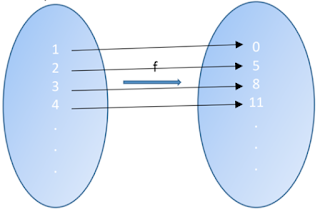
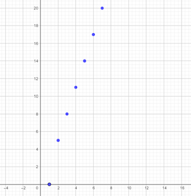
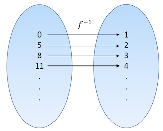
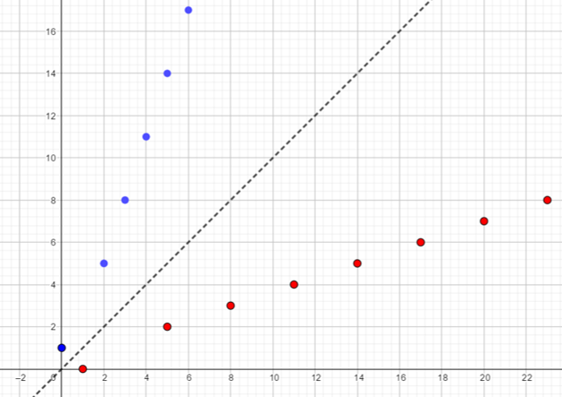
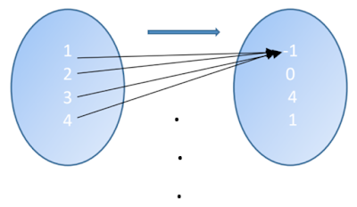
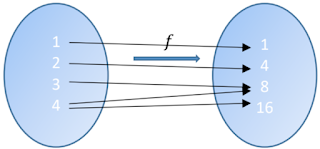
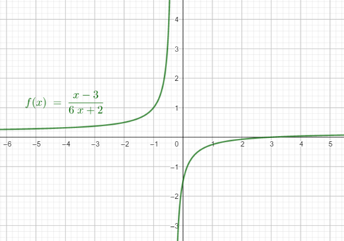
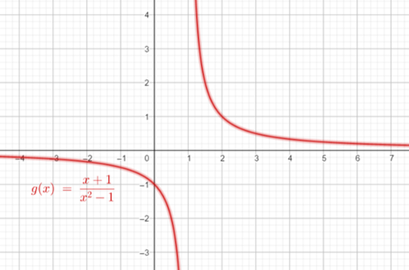
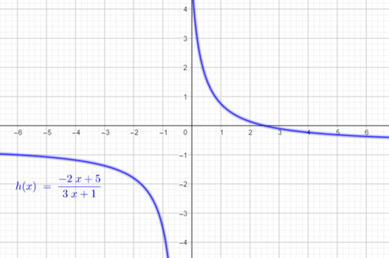

Problema 34
- Una función \(f: A \rightarrow B\) es inyectiva o uno a uno si y sólo si para cualesquiera \(a,b \in A\) con \(a \not =b\) se tiene que \(f(a) \not = f(b)\), i.e. \( \forall a,b \in A (a \not = b \implies f(a) \not = f(b))\)
- Una función \(f: A \rightarrow B\) es sobreyectiva o sobre si y sólo si para todo \(y \in B\) existe \(x \in A\) tal que \(f(x)=y\), i.e. \(\forall y (y \in B \implies \exists x (x \in A \land f(x)=y))\)
- Una función es biyectiva si y sólo si es inyectiva y sobreyectiva.
- Una función es invertible si y sólo si es biyectiva.
- Inyectiva
- Sobreyectiva
- Biyectiva
- Invertible
P34.A
Una posible expresión algebraica para esta función será la siguiente:
$$f: \mathbb{N} \rightarrow \{0\} \cup \{3n-1: n \in \mathbb{N}\}$$ $$f(n)=\left\{\begin{array}\\ 1&& n=0 \\ 3n-1&& n>0 \end{array}\right.$$Gráfica de la función \(f(n)\)
- Sí inyectiva, pues para todo par de elementos distintos del dominio, les corresponde un elemento distinto respectivamente en el contradominio.
- Sí es sobreyectiva, pues todo elemento del contradominio es imagen de un elemento en el dominio de dicha función.
- Por ser inyectiva y sobreyectiva a la vez, es una función biyectiva.
- Al tratarse de una función biyectiva, tiene inversa, la cual será de la siguiente forma: 
El dominio de \(f^{-1}\) será el contradominio de \(f\), y el contradominio de \(f^{-1}\) será el dominio de \(f\). Para obtener la expresión algebraica de la función inversa de \(f\), haremos exactamente lo mismo que en el resto de ejercicios: intercambiamos las variables y despejamos a la que antes era la variable independiente, quedándonos de la siguiente manera:
\(f^{-1}: \{0\} \cup \{3n-1: n \in \mathbb{N}\} \rightarrow \mathbb{N}\)
$$f^{-1}(n)=\left\{\begin{array}\\ 0&& n=1 \\ \frac{n+1}{3}&& n>0 \end{array}\right.$$ Gráfica de la función \(f^{-1}(n)\)Gráfica de la función \(f^{-1}(n)\)
Nótese que una característica de las funciones inversas es que tienen una simetría de reflexión con la función original con respecto a la función identidad \(f(x)=x\).
P32.B
- Es una función que no es inyectiva. Supongamos que \(Domf=A\), entonces se cumple la negación de que una función sea inyectiva: \(\exists 1, 2 \in A (1\not=2 \land f(1)=f(2))\)
- La función no es sobreyectiva, pues se cumple la negación de que una función sea sobre: \(\exists 0 (0 \in B \land \forall x (x \notin A \lor f(x) \not=0))\) Suponiendo que \(domf=A\) y su contradominio es el conjunto B.
- Como la función no es inyectiva y no es sobre, entonces no es biyectiva.
- Al no ser una función biyectiva, no posee inversa.
P32.C
La relación anterior no es una función, pues existe el valor 4 del dominio, y los valores 8 y 16 del contradominio tales que, los pares ordenados \((4, 8)\) y \((4, 16)\) pertenecen a la relación y, sin embargo, \(8\not=16\). Todo esto en simbología lógica equivale a lo siguiente:
\( \exists 4 \in A, \exists 8, 16 \in B [((4, 8) \in f \land (4, 16) \in f) \land 4 \not=16]\)Debido a que esta relación no es una función, no será inyectiva, sobre, biyectiva e invertible.
P32.D
\(f: A \subset \mathbb{R} \rightarrow B \subset \mathbb{R}\) definida por \(f(x)=\frac{x-3}{6x+2}\)
- Inyectividad: Supongamos que \(f(a)=f(b)\), por demostrar que \(a=b\). \(\frac{a-3}{6a+2}=\frac{b-3}{6b+2} \implies (a-3)(6b+2)=(6a+2)(b-3)\)
- Sobreyectividad: Por demostrar que, para todo \(y \in B\), existe \(x \in A\) tal que \(f(x)=y\). Si \(y=\frac{x-3}{6x+2} \implies 6xy+2y=x-3 \implies 6xy-x=-3-2y \implies x(6y-1)=-3-2y\)
- Debido a que \(f\) es inyectiva pero no sobreyectiva, entonces no es biyectiva. Sin embargo,
esto sucede si la función está definida como \(f: \mathbb{R} \rightarrow \mathbb{R}\). Existe
una manera de convertir esta función en biyectiva restringiendo su dominio y contradominio. Para
ello, restamos al dominio el o los valores en los que la función no está definida; así como
restar al contradominio los valores que hacen indefinida la expresión para \(x(y)\). Así, para
que la función en cuestión sea biyectiva y por ende tenga inversa, la definimos de la siguiente
manera:
\(f: \mathbb{R}-\{-\frac{1}{3}\} \rightarrow \mathbb{R}-\{\frac{1}{6}\}\)
Ya podemos calcular sin preocupaciones la inversa de esta función de la siguiente forma: Si \(y=\frac{x-3}{6x+2}\) invertimos las variables obteniendo que \(x=\frac{y-3}{6y+2}\) \(\implies 6xy+2x=y-3 \implies 6xy-y=-3-2x\) \(\implies y(6x-1)=-3-2x \implies y=\frac{-3-2x}{6x-1}\) Nombrando a esta última expresión como la función inversa de \(f\), tendremos que \(f^{-1}(x)=\frac{-3-2x}{6x-1}\).
El procedimiento de restringir el dominio y contradominio de una función será de mucha utilidad para declararla como biyectiva y así pueda ser invertible. Esta técnica la aplicaremos a los siguientes dos ejercicios desde un comienzo, ya que al tratarse de funciones racionales (con asíntotas horizontales y/o verticales) no serán sobreyectivas cuando están defidas de \(\mathbb{R}\) en \(\mathbb{R}\); es por ello que redefinimos su dominio y contradominio para calcular su función inversa.
\(\implies 6ab+2a-18b-6=6ab-18a+2b-6 \implies 2a-18b=-18a+2b\)
\(\implies 2a+18a=2b+18b \implies 20a=20b \therefore a=b\) y \(f(x)\) es inyectiva. \(\blacksquare\)
\(\implies x=\frac{-3-2y}{6y-1}\)
De la expresión anterior, tenemos que \(6y-1 \not=0 \implies y \not=\frac{1}{6},\)
por lo que existe \(y=\frac{1}{6}\) el cual pertenece al contradominio de \(f\) y, sin embargo, \(f(x) \not=y\). Por lo tanto, \(f(x)\) no es sobreyectiva. \(\blacksquare\)
P32.E
\(f: A \subset \mathbb{R} \rightarrow B \subset \mathbb{R}\) definida por \(f(x)=\frac{x+1}{x^{2}-1}\)
i) Inyectividad: Supongamos que \(f(a)=f(b)\), por demostrar que \(a=b\). \(\frac{a+1}{a^{2}-1}=\frac{b+1}{b^{2}-1} \implies \frac{1}{a-1}=\frac{1}{b-1}\) \(\implies a-1=b-1 \therefore a=b\) y \(f(x)\) es inyectiva. \(\blacksquare\)
ii) Sobreyectividad: Por demostrar que, para todo \(y \in B\), existe \(x \in A\) tal que \(f(x)=y\). Si \(y=\frac{x+1}{x^{2}-1}=\frac{1}{x-1} \implies y(x-1)=1 \implies xy-y=1\) \(\implies xy=1+y \implies x=\frac{1+y}{y}=1+\frac{1}{y}\) De la expresión anterior, tenemos que \(y \not=0\) por lo que existe \(y=0\) el cual pertenece al contradominio de \(f\) y, sin embargo, \(f(x) \not=0\). Por lo tanto, \(f(x)\) no es sobreyectiva. \(\blacksquare\)
iii) Redefiniendo la función \(f\) de la siguiente manera: \(f: \mathbb{R}-\{-1, 1\} \rightarrow \mathbb{R}-\{0\}\) Tendremos que \(f(x)\) es inyectiva y sobreyectiva, es decir, biyectiva; y por lo tanto, tiene inversa. Calculando la inversa tendremos lo siguiente: Si \(y=\frac{x+1}{x^{2}-1}=\frac{1}{x-1}\) invertimos las variables obteniendo que \(x=\frac{1}{y-1}\) \(\implies x(y-1)=1 \implies xy-x=1 \implies xy=1+x \implies y=1+\frac{1}{x}\) Nombrando a esta última expresión como la función inversa de \(f\), tendremos que \(f^{-1}(x)=1+\frac{1}{x}\)
P32.F
\(f: A \subset \mathbb{R} \rightarrow B \subset \mathbb{R}\) definida por \(f(x)=\frac{-2x+5}{3x+1}\)
i) Inyectividad: Supongamos que \(f(a)=f(b)\), por demostrar que \(a=b\). \(\frac{-2a+5}{3a+1}=\frac{-2b+5}{3b+1} \implies (-2a+5)(3b+1)=(3a+1)(-2b+5)\) \(\implies -6ab-2a+15b+5=-6ab+15a-2b+5 \implies -2a+15b=15a-2b\) \(\implies -17a=-17b \therefore a=b\) y \(f(x)\) es inyectiva. \(\blacksquare\)
ii) Sobreyectividad: Por demostrar que, para todo \(y \in B\), existe \(x \in A\) tal que \(f(x)=y\). Si \(y=\frac{-2x+5}{3x+1} \implies y(3x+1)=-2x+5 \implies 3xy+y=-2x+5\) \(\implies 3xy+2x=5-y \implies x(3y+2)=5-y \implies x=\frac{5-y}{3y+2}\) De la expresión anterior, tenemos que \(3y+2 \not=0 \implies y \not=-\frac{2}{3}\) por lo que existe \(y=-\frac{2}{3}\) el cual pertenece al contradominio de \(f\) y, sin embargo, \(f(x) \not=-\frac{2}{3}\). Por lo tanto, \(f(x)\) no es sobreyectiva. \(\blacksquare\)
iii) Redefiniendo la función \(f\) de la siguiente manera: \(f: \mathbb{R}-\{-\frac{1}{3}\} \rightarrow \mathbb{R}-\{-\frac{2}{3}\}\) Tendremos que \(f(x)\) es inyectiva y sobreyectiva, es decir, biyectiva; y por lo tanto, tiene inversa. Calculando la inversa tendremos lo siguiente: Si \(y=\frac{-2x+5}{3x+1}\) invirtiendo las variables se tiene que \(x=\frac{-2y+5}{3y+1}\) \(\implies x(3y+1) = -2y + 5 \implies 3xy + x = -2y + 5\) \( \implies 3xy + 2y = 5 - x \implies y(3x+2)=5-x \implies y = \frac{5-x}{3x+2}\)
Nombrando a esta última expresión como la función inversa de \(f\), tendremos que \(f^{-1}(x)=\frac{5-x}{3x+2}\)